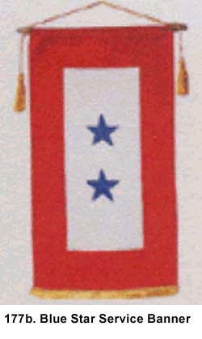
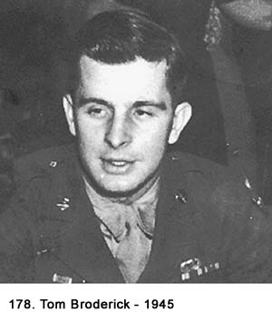
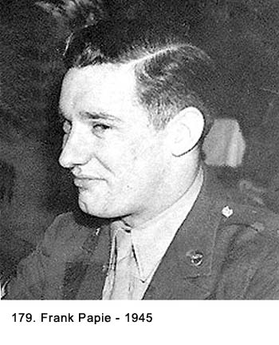
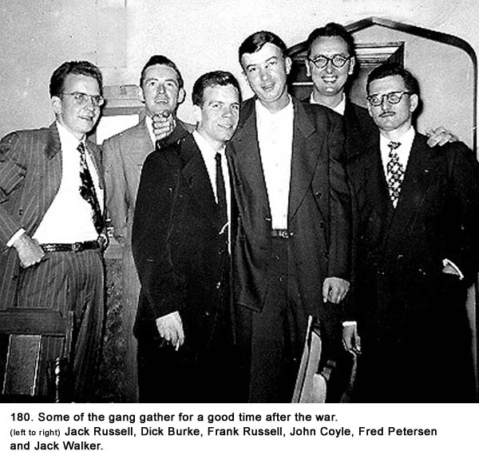
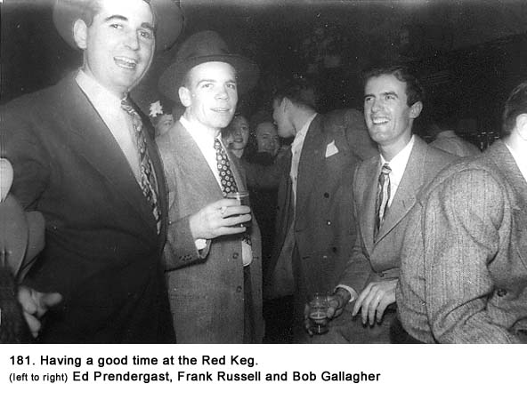
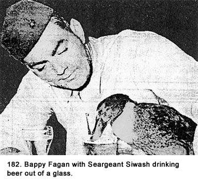
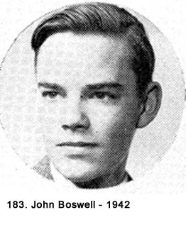
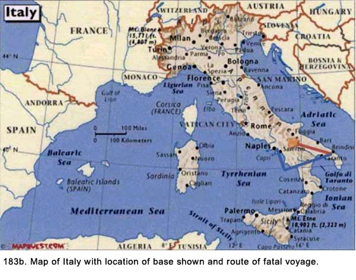

|
Table of Contents < - - - return Epilogue < - - - next
World War II Story by Robert F. Gallagher Chapter 30 - Post War When you put down the good things you ought to
have done, and leave out the bad ones you did do - well, that's Memories. _______________________ Family, Relatives, and Adjustments Upon arriving home on my day of discharge, I
immediately changed into civilian clothes. I never put on my uniform again.
This made me feel as though my military days were officially over, but it
took several weeks before the finality of it really registered. In the Army,
you lead such a structured When we were discharged, the Army had given us a gold pin to wear. It was to indicate we were veterans of World War II and had been honorably discharged. It was very plain looking and had a soaring eagle with a ring surrounding it (See Fig. 177a). Originally, it had been issued as a cloth insignia to be sewn over the breast pocket of a uniform. It signaled the wearer could continue to wear his uniform an additional thirty days after discharge. Later, it was issued as a pin to be worn on civilian clothes as a badge of honor. The veterans all gave it the unflattering nickname of a Ruptured Duck, and very few of us wore it. I don't know why they were so unpopular. It might have been the vets' final sign of disdain for their military life. If the Army, or any other branch of the military for that matter, thought that we should wear it now that we were civilians, they couldn't make us do it. Even though we were proud to have served our country, we were not going to put anything on that had been issued by the military, not even a pin. Over the next couple of years, I saw only about a half a dozen of them being worn. I sat down with my family and brought them up to date on some things I had been doing and filling them in on details I had not told them in my letters. My brother Jim and I compared notes about the Army. He had been in service for about three years. My brother Bill was too young for service during the war but he would later become a Navy pilot. My sister Joan brought me up to date on things that were going on in the neighborhood, and I was especially interested in hearing about some of her good-looking girlfriends. My mother went over to the living room windows and took down the small banner that had been hanging there. It was about ten inches by eighteen inches in size and had two blue stars on a white background with a red border around it. Officially, it was known as a Blue Star Service Banner (See Fig. 177b). It represented the fact that there were two people in the military service from our house. It was the second banner she had used. The first one had to be taken down because one of the stars had faded from blue to silver from the sun. Evidently, she would pull the window shade down to the same level every day and one star got more sun than the other. The neighbors kept offering her condolences for having lost a son in the war, but of course that had not happened. Actually, a gold star signified a GI had been killed. It was easier to get a new banner than to explain why the two stars were of different colors. My mother collected clocks, so I started to tell her about the beautiful ones I had seen in the house we stayed in at St. Goar, Germany, and how I had been tempted to bring one home with me. She stopped me in mid sentence because she did not want to hear about her son looting in the Army. She would have called it stealing and even thinking about it was wrong in her estimation. We made trips to see the relatives who lived in Joliet, Illinois, and I repeated some of my stories to them. It came as a great surprise to me that there were few civilians who asked, "What did you do during the war?" I had anticipated there would be a great interest in my experiences and that I would spend long hours relating stories. How wrong I was. Most people, friends, relatives, and acquaintances never asked the question. Those few who did seemed to do it more as a courtesy rather than because they had any real interest, and they seemed bored if I got into details. The questions more often asked were more indirect like: Did you ever see Patton? Did you see the concentration camps? What was Paris like? Are you glad to be home? To really tell what I did in the service would have taken hours to relate. I found the civilians and even my closest friends, including many veterans, were not even interested in a shorter version or a few of the highlights. It did not bother me they showed so little interest, but it was not what I expected. One day, soon after I got home, my brother Jim took me aside to ask me something that was obviously a secret from the rest of the family. Had I ever heard about the movie called The Outlaw, starring Jane Russell? he asked. I assured him I had because it was getting a lot of coverage in the press. It had just been released by Hollywood and was considered quite risqué for that time in history. Jane Russell had been one of the many pin-up girls whose pictures had adorned military barracks during the war and she was well known for her knockout figure. As my friend Frank Papie described her, "She was a very healthy looking girl." Her acting was not as well admired. Without telling where we were going, we took the streetcar to downtown Chicago where the movie was playing at the Oriental Theater on State Street. The movie was disappointing for two reasons. It was not nearly as risqué as we thought it was going to be, and overall it wasn't even a good movie. What we gained from it, however, was a chance to tell our friends about it with certain embellishments added about the well-publicized scenes. Probably the hardest adjustment to civilian life in the early stages was trying to clean up my language. In the Army, we all had been using four letter words as adjectives, especially when trying to make a point. While I had cleaned up my act considerably about the time we started MP duty, profanity had not been completely eliminated from my vocabulary. It really took some concentration to break the habit completely because it had been going on for years and just came out spontaneously. There were some real horror stories from my friends when someone would blurt out the "f" word in the middle of a family dinner. I did better than my brother Jim, who shocked the family with his descriptive phrases. It took several months before both of us broke the habit and we could talk to our parents without first thinking out each sentence before we spoke it. While it was nice to see my family and relatives again, I was eager to get back to hanging out with my old buddies and learning what they had been up to for the last three or four years. While we had done some corresponding, I had not heard from some of them at all. With others, there were only a few letters. In those days, at least in my neighborhood, your social life was quite removed from your home life. Not that they were not welcome at our house, but it was the way we preferred it. We always met on neutral ground, which meant on a street corner in good weather, at a drugstore, a hamburger restaurant or a tavern in inclement weather. Before the war, we had tested the patience of several business proprietors by hanging around their stores until they asked us to leave. We were now old enough to go into taverns legally so that is where we would meet in the evenings. During the daytime, I expected to find my friends still hanging out at our favorite prewar site, Miner-Dunn Restaurant. It was strictly a place that sold hamburgers, fries, etc., but we had spent many hours there before the war, mainly because they would put up with us for longer periods of time than most places. The taverns and Miner-Dunn were all up on 79th Street. 79th Street The business, social, cultural (to stretch a point), entertainment and transportation center of our neighborhood was 79th Street. The big red streetcars swayed, rattled and clanged down the street on two sets of tracks. The street proper was made of paving bricks. As a young boy during the Great Depression, I had watched when thousands of men working for the WPA (Works Progress Administration), a make-work program for the unemployed, descended on the street. They took up every brick by hand, chipped the mortar off of them, piled them up in stacks, placed them back on the street and repoured new mortar. Afterwards, the street looked exactly the same as it did before they started, but a lot of men got badly needed payment for their labor. Everything you needed could be found on 79th Street, most of it within walking distance. There was the ornate and large Avalon Theater, a bowling alley with pool tables, a Sears store, an A&P (Atlantic & Pacific) food store, Woolworth's Five and Dime, and Our Lady of Peace Church and grammar school where my siblings and I had gone to school for eight years. A short ten-minute streetcar ride to the East would take you to the sandy beaches of Lake Michigan. The neighborhood was an ethnic melting pot if there ever was one and the stores along both sides of the street were typical of the mix. There were Greek and Italian restaurants, Irish taverns and drugstores, Chinese take-out restaurants and laundries, a German and a Swedish bakery, a Jewish deli and candy store, dry cleaners, and more. In about half the establishments the proprietor lived with his family in the back of the store. But don't confuse these stores with those that you see today. You could put twenty of the A&P grocery store on 79th street into one of the giant food stores you see today. Over the stores were offices for doctors, lawyers, and dentists. On every other block there was a store with some dusty posters advertising cigars and cigarettes. These were the bookie establishments that were either open or closed depending upon how the politics in the city of Chicago were going. Among my friends, we decided you could tell the status of the bookies by the type of car the two police captains who lived in the neighborhood drove. Buick meant open, and Chevy meant closed. The Red Keg and The Chatterbox One evening after being home a few days, I headed up to 79th Street. My first destination was the Red Keg tavern on Bennett Avenue, where most of the young men in the neighborhood hung out. It was not my gang's first choice but we did go there frequently because we knew so many people who would be there. It was a typical bar, with minimal decorations and some beat-up furniture. But to many of the young men of the neighborhood, it was their meeting place and social club. In a more upscale area it might be called a sportsmen's club but along 79th Street that would be too much of an affectation. There was a bar along one wall with stools, the room itself held about eight bare tables with chairs. Most of the patrons were drinking beer. Normally, before the war, there would be half a dozen guys hanging around on a typical evening during the week, with heavier traffic on the weekend. That first weekday evening when I arrived, it was packed with people, most of them veterans. They were displaced persons, like the other millions of ex-service men who returned from the war within the last six months. Their lives had been disrupted for the last two to four years and they were now enjoying freedom from the regimentation of military life as they tried to find their way back into civilian life. They were out to have some fun with their old buddies and acquaintances because they wanted to make up for some of the good times they had lost. The conversations covered many subjects but mainly they were about getting up to date on what everyone had been doing since they saw them last. Often, they discussed what activities they were going to partake in over the next week or so. Thoughts of the future usually did not extend past a month. Longer range plans relating to careers, getting married, and starting a family would come later. This was fun time, and more serious matters had to wait. The atmosphere was light and cheerful; you could almost call it frivolous. Despite the broad range of ages from about twenty to thirty-two, everyone was glad to see everyone else and there was loads of bantering and kidding with one another. Under normal circumstances, many of these men would have been married, possibly with children, with steady jobs by now. Occasionally, the vets who were married would come into the Red Keg, usually with their wives, but most of the customers were single. I knew most of the men there as friends, friends of my brother Jim (it was his gang's favorite spot), or fellows I had grown up with from the neighborhood. I heard stories about some of the guys from the neighborhood who had been killed or wounded during the war. Up in the corner of the bar was a television set showing a wrestling match. The picture quality was terrible, but it was still getting a lot of attention. Television was just coming on the market commercially and nobody I knew had a set at home. I took a look in the rear room to see if a gin-rummy game was going on as was the usual practice. There was, but I did not know any of the players well so I went back to the bar area. While I was enjoyed my stop at the Red Keg, my close friends were not there so I headed west down 79th Street about three blocks to the Chatterbox Cocktail Lounge. I passed many of the old landmarks like Al's Vegetable Store, Grimm's Barber Shop, Prendergast's Drug Store, St. Moritz Restaurant, and the good old Avalon Theater. The Chatterbox was a large place with a big oval-shaped bar, quite different from a neighborhood tavern like the Red Keg. It was done up in art deco style with lots of chrome, glass, mirrors, and wood paneling. Along both sides of the large horseshoe- shaped bar were booths with bright red Naugahyde covering. There was a small restaurant in a back room that specialized in steaks. The crowd was large, and in addition to all the stools being filled, they were standing two or three deep at the bar. The place was very busy, the atmosphere exciting and noisy with a heavy layer of smoke hanging in the air. I had to work my way through the crowd to get where I was going. I found my close friends. Despite the fact I had been separated from them for several years, greeting them was like returning after a twenty-four hour absence. We stood around and talked and laughed for many hours. It was a procedure we would repeat many times in the months ahead. We told funny stories and anecdotes; if they got a laugh, we told them over and over again. I got filled in on what they did and how they fared during their years in the service. Fortunately, none of my friends had been killed, but four had received serious wartime wounds. They all had Purple Heart medals and some Bronze Star medals to show for their heroic deeds, although they were too modest to ever show them. Tom Broderick (See Fig. 178) was the most seriously wounded while he was with the 82nd Airborne Division in the European Theater of Operations. It happened during a joint venture operation in Holland in late 1944 that included American and British paratroopers. It was given the code name of Market Garden. This operation was later described in a book and a movie called A Bridge Too Far. Tom and his unit were some of the twenty-thousand men from the 82nd, 101st, and British Airborne who were dropped behind enemy lines along a roadway leading into Germany. Their objective was to hold the road and bridges until ground troops could relieve them and form a wedge leading up to the Rhine River at a town called Arnhem. The overall operation was a failure, the Allied advancement only succeeded in getting as far as a town called Nijmegen, one bridge short of Arnhem , their final objective. The German army would later drive them back from that position. During the heat of the battle, Tom was in his foxhole one night near Njmegen defending his unit's position. It was close to the river and they were surrounded by German troops. In the morning, he rose up to take aim at a German soldier when a sniper shot him through the temple, severing his optic nerve and blinding him. By the time I met him that night in the Chatterbox, he had already been through the Army's program to train blinded veterans how to get around in society, and his mother was planning a trip to Lourdes, looking for a miracle. They finally went but the miracle didn't happen. His wartime experiences are described in the best-selling book called The Greatest Generation, authored by the TV anchorman Tom Brokaw in 1998. Leo Walsh was a fellow I had known from spending most of my summers before the war at my grandmother's house in Joliet, where his family lived nearby. His family moved to Chicago shortly before the war, and he began to hang out with our crowd. Leo was still in the Fifth Army Veterans' Hospital in Chicago preparing for a third operation on his legs, which were badly shot up while he was fighting in the Philippines. We went to see him several times, and he came around in about a month wearing braces, which he had to use the rest of his life. He had gone from being a great basketball player with quick moves before the war, to someone who walked with great difficulty after it. While visiting Leo in the veteran's hospital, I learned another fellow from the neighborhood, Ned, was also there. He was in the psychiatric section, and we went to see him. He had been badly shot up in the ETO. Whatever his problem was, soon after our visit he was discharged back to civilian life. He had little use of his right arm the rest of his life. John Coyle had been with an armored division, and he was wounded in the side and in the buttocks during the Battle of the Bulge. We got a lot of mileage kidding him about the latter wound. Bob O'Keefe was with the Second Marine Division, and he was wounded during the island invasion of Saipan in the Pacific Theater of Operation. He was a BAR (Browning Automatic Rifle) man. The weapon was known as a lethal weapon because it could be used as a light machine gun, with its twenty-round magazine. The term lethal not only applied to the gun's great firepower; it also set up the man carrying it to be killed. The carrier often became a primary target of the Japs, who tried to take him out of action first to reduce the firepower of the Marines. Bob was shot in the hand soon after he landed on the island. The bullet traveled through his forearm and came out his elbow. He had limited use of that arm for the rest of his life. In addition to those with combat wounds, Frank Russell received an early discharge when he developed bad cases of trench feet and hepatitis while he was with the 34th Infantry Division in the mountains of Italy. He was assigned to an 81 mm mortar unit, and they used mules to carry the ammunition. We kidded him that when the jackasses (it sounded better than mules) gave out, he had to take over carrying the equipment. We made a joke out of it, but it was also the truth. Although there were many heroes in our neighborhood who had done outstanding deeds of bravery in the war, nobody used the words hero or courageous when describing their wartime exploits. It would have embarrassed them. Even those who had sustained permanent injuries from their wounds, like Tom, Leo, John, and Bob, were not treated special even though we admired the sacrifices they had made. It was not until many years later when interest in the history of World War II had a resurgence that we really began to appreciate what heroes these men really were. There were others at the Chatterbox including Frank Papie, Ed Prendergast, and Dick Burke. Frank Papie had enlisted and served almost four years in the Army Air Force with the 489th Bomber Group of the 8th Air Force (See Fig. 179). He spent most of his time in England, but he was also sent to the Pacific Theater after the European war was over. Ed was accepted as an Air Cadet, but when he got down to a Texas Air Base, a doctor took a better look at his leg, which he had burned as a youth. Ed was given an immediate medical discharge. Dick Burke was the only one of our group that had not been in the service at all and it was for medical reasons. He was a good dresser and filled us in on what kind of civilian clothes we should be wearing. He also had a car, which came in very handy for getting around in our pursuit of a good time. (See Fig. 180) Jack Walker showed up at the Chatterbox still wearing part of his military uniform. He had been a tanker with the Seventh Army in the ETO and saw a lot of action. The uniform parts caused quite a stir among the other veterans and Jack took more than his share of razzing because of it. The unwritten law had been laid down that once you were discharged, all vestiges of military service were to be discarded. The reason was never discussed and I never knew why it was that way. 
Saturday Night A typical Saturday night in 1946, after the
war, would start out with seven or eight of our crowd meeting at either of
our two social clubs, the Red Keg (See Fig. 181) or the Chatterbox, at
approximately 8:00 p.m. No phone calls were made ahead of time because we
just knew the meeting place would be one or the other. When we tired of one
location, we moved. While at the Chatterbox, one of our pastimes was to make
bets who could catch the bartender stealing money first. We usually broke
out some Robert Burns cigars to smoke on Saturday night to give the evening
more distinction from other nights of the week, when our routine was
basically the same.  At about midnight, we would all pour into someone's, car and head to 71st Street and Jeffrey Boulevard to a place called Lyon's. This was another cocktail lounge, but it was much larger and even more ornate than the Chatterbox. They always had a combo playing music, and it was even more crowded, exciting, and noisy. There were four girls working for the house, standing up in back of little green felt-covered tables. Customers would roll dice from a leather dice cup for drinks in a game called "26." At about 2:00 a.m., we would head home. Tom, who was blind, kept putting pressure on us to let him drive a car. He had his own before the war, and he probably missed driving as much as anything. When we were out driving around, he usually sat next to the driver and shifted gears with his left hand as the driver worked the clutch and steered. Eventually, he convinced us to let him sit behind the wheel and drive. I probably don't have to tell you that a night of drinking breaks down a lot of barriers, including the one called good sense. Driving with a blind man is quite a thrill. Somehow we got back to our own neighborhood. In fact, it worked so well we did it several times after that. Needless to say, he got a lot of help in the steering department. We usually stopped at the White Castle on 79th Street before going home. The theory was that the grilled onions in the miniature hamburgers would kill the stale beer smell in our bedrooms, but I'm not sure the grease smell was that much better. Stories Everyone had a story to tell, and most had more than one. They were usually about some incident that had happened in the service that was funny, unusual or outlandish. Many of them were bawdy but many were not. All of us had met someone who was completely different from anyone we had ever encountered before, and telling those stories made great conversation. Also, we had all been in unusual situations or seen things happen that were so ridiculous we had a lot of material to call on. Probably the most unusual thing about the conversations was the fact there was almost no talk about battlefield experiences, especially relating to being wounded. I never did find out the full story of what most of my friends went through in their military experiences. The reason for this reluctance to talk about this subject may have been explained when, as an exception to this rule, John Coyle told a story about the Battle of the Bulge. Almost casually, he mentioned he was holed up in a building in a small village with several other GIs when they spotted three Germans approaching. They fired and killed all three. He wasn't bragging or anything like that; it just popped out as part of another story he was telling about their lack of sleep. There was complete silence by the rest of us hearing the story and several of the men flinched at the ending. It's strange how cold it sounds to tell about killing someone, even during wartime. It was the only remark of that kind I ever heard from my friends. Most people, including veterans, do not like to hear details about the real purpose of war. Most people like stories with happy endings, and war stories do not fit that category. Frank Papie had the funniest stories and he knew how to tell them. Most of them can't be repeated here. Because he spent a lot of his service time in England, most of the stories were about their unique way of speaking and customs. They often were about Piccadilly Circus (a square in London) and the girls there who were called Piccadilly Commandos. Probably the funniest stories were about a girl he dated from a small town near the air base north of London where he was stationed. Her father had the concession for picking up the honey buckets (a substitute for a central sanitary sewer system) in town. One night, he loaned Frank the truck he used for work to take his daughter to a dance. As Frank described it, "Everything was fine as long as you were headed into the wind." The girl's last name was Catchpole, which led to a lot of comments. Here is one of the typical jokes he told that got a lot of laughs. This GI goes to London on a pass and he meets a Picadilly Commando in Picadilly Square. He negotiates a price to spend the night with her. The two of them board a double-decker bus to go to her apartment. They go to the upper deck of the bus to take their seats, and the GI notices they are the only ones up there. He decides to start his romancing early so he reaches down into her blouse. She immediately pushes his hand away. He tries this several more times, and each time he is forcibly rejected. Finally, she yells at him (this line sounds best with a cockney accent): "Ony (any) more of this familiarity and the whole f---'s off! Bob O'Keefe, the marine, told about what happened to him after he was wounded during the invasion of the island of Saipan. He dove under a disabled vehicle on the beach and was surprised to see another wounded marine from our same neighborhood, named Brian "Whitey" Quirk. They helped each other take care of their wounds until they could be evacuated. Tom, the paratrooper, told about his squad picking up a straggler from another outfit while they were behind enemy lines in Holland, during the Market Garden Operation. One night, while Tom and his crew were trying to remain quiet to avoid giving away their position to the Germans, this guy was talking loud all night long. They never found out who he was and they suspected he was responsible for some of their casualties. Our friend Fred "Pete" Peterson's personal experiences were certainly the most outlandish. Pete always marched to a different drummer so we were not surprised when we heard about his military escapades. He had been assigned to a heavy artillery outfit that saw a lot of action in the ETO. Pete could not stand to have anyone tell him what to do, so you can imagine how he clashed with Army discipline. He wound up as a loader, which meant his duty consisted primarily in lugging large, heavy shells around for a artillery piece. His officers and noncoms were constantly threatening him with court-martial and other penalties because of his conflicting attitude. Finally, he elected to try and fake his way out of the Army by pretending to have gone crazy. He was sent to a psychiatric hospital where he spent much of the time, as he described it to a friend, "picking apples where there were no trees." I don't know what his discharge paper read but I can bet it wasn't the same as the rest of ours. The procedure of pretending to be crazy, if it was pretending, Pete used was known in the Army as bucking for a Section Eight. Whenever anyone showed some erratic behavior they would be accused of this, but usually it was done in kidding. The Army's designation for discharging a person with mental problems was Section Eight of their military code. Pete moved up to the north side of Chicago shortly after the war so we never got all of the details we really didn't miss hearing. In addition to the numerous stories told by my immediate friends, there were other wartime experiences of men in the neighborhood we knew. There was Mort Whalen who had to ditch his bomber in the English Channel. He had to knock out an escape hatch in the cockpit with his head to save himself. Yori was a fellow of Jewish heritage who got the Bronze Star medal for bravery. He had been captured by the Germans, who suspected he was Jewish. He had thrown his dog tags away when he was about to be captured because his name, Bernstein, and his religion, H for Hebrew, had been stamped on them. At the time of his capture, the attempt to exterminate the Jews in Germany and their conquered countries was already known. He told his captors that his name was Burns, and his fellow prisoners tried to teach him the sign of the cross and some prayers so he could use them in front of his captors. They were trying to pass him off as a Catholic. His acting must have prevailed because he returned after being liberated by the Russian army. He told stories about what a rag-tag outfit they were. The history of how the Germans treated American POWs of the Jewish faith is somewhat mixed. In some camps they were treated like any other GI but some real horror stories were also told. Some of them were sent to Occupied Poland to work as slave labor in the coal mines. They worked twelve-hour days with two days off a month while being fed inadequate food rations. A large percentage of them did not return after the war. There was an ex-Air Force captain who was always hanging around the Chatterbox from early afternoon until late at night. He was always there when we arrived, and he would still be there when we left. We knew him only from seeing him there. He wore his Air Force leather flight jacket continually, regardless of the weather. The white captain bars that had been painted on his shoulders had been scraped off but, intentionally or not, enough was left to indicate his rank. He seemed to be having a very difficult time adjusting to civilian life and was drinking heavily for solace. There were probably a lot of veterans like him. In fact, the Red Keg had several vets who seemed destined to alcoholism. To me, the Chatterbox was fun to visit. It was a place to meet with my best friends, to exchange a joke, a reminiscence, a war story or to just enjoy a little bit of idle conversation over an ice-cold beer. In the minds of my friends and me, it represented much more than a place to imbibe. It was not only a lot more plush than a neighborhood tavern, but it gave us some sort of distinction that was probably more imagined than real. It felt like we were going someplace special. Just thinking about going there after the war stirred up great feelings of joy in anticipation of what was going to happen. I look back on those days as some of the happiest of my life. The fact that it followed nearly three of the worst years undoubtedly had something to do with it. Many times while I was in the service, I dreamed of returning to this lifestyle, and it was now a reality. Life was great, the past was past, and the future could wait. The Marines A lot of the local men had joined the Marines early in the war, and they saw a lot of action. Some served in several of their divisions and it was almost unbelievable they all came back alive. They had many medals, but most of us never saw them because they, too, elected to go into civilian clothes as soon as they got home. One of the Marines, Frank "Bappy" Fagan, brought a live duck home with him from one of the Pacific Islands and claimed the duck drank only beer. Its name was Sergeant Siwash. All the Chicago newspapers picked up the story and published pictures of the duck standing on the bar at the Red Keg drinking beer out of a glass (see Fig. 182). It turned out Bappy kept all liquids away from the duck so it would have drunk anything. Bappy would walk down 79th Street with the duck on a leash. Everyone was out to have a good time, and things like this just added to their enjoyment. Actually, Bappy had been the neighborhood hero before the war because of his athletics skills and almost legendary strength. His ability to hit a sixteen-inch softball farther than most men could hit a baseball (hardball) gave him status reserved for Nobel Prize winners in more sophisticated company. Excellence in sports was the primary attribute admired in our neighborhood. Brian "Whitey" Quirk, who was one of the Carlson Raiders, was highly decorated. He had received a battlefield commission and was awarded the Silver Star for his exploits in the South Pacific Battles. He was wounded in the same battle with Bob O'Keefe in the Makin Islands. A number of the ex-Marines decided to join the Marine Reserves. After all, the world was at peace and what could possibly happen after everything was settled during the great World War? What happened was the Korean War started on June 5, 1950, just five years after the end of World War II, and the marine reserves were all called back into service. These men from my neighborhood all participated in and survived that war, too. Clothes and Cars Following the war, there was an acute shortage of civilian clothes because all the clothing manufacturers had been producing uniforms during the war. It would take time for them to convert their manufacturing facilities. Also, the veterans were all in the market for something new, and they were all hitting the market at the same time, which caused great demand. Because I wore an extra-long size in a suit, it was especially hard for me to find what I wanted. After doing a lot of searching, I finally had to make do with my prewar one for about a year. On Friday and Saturday nights, we would wear suits, dress shirts, ties, well-shined shoes, and hats out to meet the gang for our big nights on the town. We had all bought a special fedora, named Cavanaugh, at an exclusive men's store called Capper & Capper in downtown Chicago. They had a three-inch brim and we took great pains to shape the crown just right. We thought we looked like something special. Every man in the Red Keg, Chatterbox, and every other respectable place had on a fedora and as a group, we looked like the extras for a Godfather movie. There were no new cars produced during or immediately following the war so used cars were at a premium. My father had a black, two-door Ford with absolutely no extras that he had bought several years before the war started. It had well over one hundred thousand miles on it. He had a line on a newer used car so I went with him to sell the old one. Without even driving it, a dealer paid him nine-hundred dollars for a car my father had paid less than seven-hundred dollars for when it was new. The clutch was stripped, and it had all kinds of problems but anything could be sold for a premium at that time. When new cars started to come out, one of the first models on the street was the Hudson. It was bulbous looking and only slightly shorter than the funeral hearse it resembled. Dick Prendergast (Ed's brother), who was hanging around with our group at the time, was one of the first to get one. He had been a pilot during the war, flying C-46 supply planes and B-24s bombers that were converted to carry supplies over the Himalayan Mountains in China, known as the Hump to men in that theater of operation. (It was also known as the Aluminum Trail because of all the planes that had gone down along that route.) His new Hudson came without bumpers, a rear seat, a gearshift knob, and a number of other items. Because there was such a shortage of parts, cars were being sold to customers lacking some non-essential parts that could be added later. Dick put a wooden bench in the back and we would load about eight people into it. However, there was a problem we had while riding in his car. Dick had the habit of turning around to respond to anyone who said anything to him so we had to remain as quiet as possible. Taking his eyes off where he was going might have been all right while flying over mountains but it did not work well on the ground. He was always having accidents. Another one who got a car early was Jack Russell (Frank's brother). He, too, came around frequently. He had been an intelligence officer in the Army and somehow he wound up dealing with the Russian soldiers after the war. They loved American watches, so he sent home and got a box of cheap ones that he sold to them. The money paid for the car. Some years later, we accused Jack of starting the Cold War. We claimed the cheap watches broke down, causing the duped Russians to seek revenge. An entrepreneur named Tucker came out with a new car with some unique features shortly after the war. A number of veterans I knew invested their mustering out money in the stock of the company, trying to get in on the ground floor of what was supposed to be a promising venture. After producing fifty-six cars, the company closed and the vets, along with everyone else, lost their investments. Things Were Changing A new American Legion Post was started up on
79th Street in a hall located over some of the stores. It was named the
Steven-Doyle Post, after two young men from the neighborhood who had been
killed in the war. We all joined and there were some great parties and
dances that drew in large crowds. The slot machines borrowed from the back
room of Grimm's Barber Shop-for a fee because Grimm never gave away
anything-were set up at the post and added some fun to the evenings.
However, the Post did not last long and closed in a couple of years because
of poor attendance. I believe legion posts and other organizations of that
type go over bigger in small towns where there is not as much competition
from other sources of entertainment as in Chicago. And so our stories about the war became less interesting and eventually uninteresting to most people. Those who had not been in the service tired first because they had nothing to relate to. Also, unpleasant subjects are not what people like to discuss at cocktail parties, at the office, or most anywhere else. I've watched airline pilots, doctors, lawyers, and successful businessmen hold an audience in rapt attention at a party with tales about their work. Could a veteran do the same with a heroic tale about some exciting combat he had experienced that would probably include death and injury? Not without ending the discussion in general and probably cause listeners who had never seen the horrors of war to wince in disgust. No matter how it is presented, or by whom it is told, or how bad the person was that was killed, killing is still a vicious act. The farther you get from the battlefield, the more immoral it seems. Civilians only want war stories of heroes or those involving glory, not the details of someone who is bloodstained. So the war stories fade away and are only repeated among older veterans, who throw in a couple of them with their other reminiscences. As the wife of one of my veteran friends said when her husband repeated too many stories in her presence, "Tom, it's over!" Most of us did not notice or care when the early respect and adulation faded. We were too busy starting and later living civilian lives. Those veterans who were killed and those with permanent injuries deserved much more attention than they got while the rest of us, as a rule, got about what we expected. While my friends and I were having a great time partying in the postwar excitement four or five nights a week, there were some strong influences working to end it all. First, there were the not-so-subtle hints at home like, "Bob, have you thought about what you want to do with your life?" Second, money was starting to run low, and it soon would be gone. A lot of fellows extended their pursuit of good times by signing up for the government's unemployment program for veterans under the Serviceman's Readjustment Act of 1944 better known as the GI Bill of Rights. They gave you twenty dollars a week for fifty-two weeks. Veterans referred to it as the 52-20 Club or just plain beer money. The third and most potent force breaking up the extended bachelor party could be described in one word: girls. During the war, many young ladies had experienced a very limited social life, with most of the eligible men being in the service. They were now watching these same guys hanging around bars with their buddies telling war stories and they were not too happy about it. Many of the girls had visions of doing more dating, becoming engaged, getting married, and settling down to start families. Some of them were already at or beyond the acceptable age for young ladies to be married, they were working feverishly to do something about changing theirs and the veterans' social lives with the final objective of also changing their marital status. While it was not considered proper for ladies to go into bars (there were some exceptions in neighborhood taverns) prior to the war, that taboo was breaking down. Often, in our neighborhood, it would happen that a sister of one of the men in the bar just had to tell her brother something important, and it had to be told right now. She would drag along three or four of her girlfriends and, with just a hint of an invitation from one of the brother's friends, the girls would all wind up staying for the evening. Frank Kegowicz, the bartender, and the Keg half of the Red Keg Tavern, was not that crazy about women in his place of business. First of all, they drank less and second, they wanted drinks like Tom Collins, gimlets and gin bucks, which were not his specialty. Beer was much easier to dispense. I remember when one of the girls ordered a Tom Collins and when it came without a maraschino cherry, she asked where it was. Keg replied that they were out of them but, in fact, I don't think the Red Keg ever had any. The girls in the bar were all from the area, and we knew them all. The girls used other procedures to get the veterans more active in dating. In my case, my sister was helping the cause of matchmaking by fixing me up with dates with her girlfriends, and I'm sure there were many other ways the girls were maneuvering. But the girls were finding willing targets. Most of us veterans also had limited exposure to the opposite sex most of our time in the service, and we were eager to change that situation. The crowds at the Red Keg and the Chatterbox were starting to thin out as more and more men began dating. When we had dates, we usually stayed away from those places. There were too many eligible bachelors there, and we figured, why invite competition? We did a lot of double dating to make the limited supply of cars go around. There were a lot of great places to go in and around Chicago, including some great jazz joints and places that had combos or orchestras for dancing. Finally, several of my close friends started to go steady, became engaged or got married. At any one of those stages, we seldom if ever saw them around our hangouts. Finally, the returning veterans vacated places like the Chatterbox and Red Keg in droves, leaving the barstools to the few heavy drinkers and the faithful long-standing patrons who considered them second homes. However, there were still some nostalgic reunions of different groups at these places in later years and a reliving of some happy times. Starting a New Life As time went on, the emphasis began to shift from having a continuous good time to finding what we wanted to do with our lives. Nobody wanted to be the last guy standing at the bar, so the emphasis was on finding a job or going back to school. Free testing to help us decide what kind of job we were best suited for was available for veterans through the University of Chicago. Frank Papie was the first one of our group to take the test. When his results were finalized, they concluded he should be an airplane mechanic. Coincidentally, he had just returned from doing just that in the Army Air Force. That turned us all off on the testing. I figured if I took the test, they would have recommended I dig ditches for a living based on my expertise in digging dozens of gun pits during the war. We all had vague ambitions and dreams of what we wanted to do with our lives without knowing how we were going to achieve them. Our time in the service had taught us life is heavily dictated by factors over which we have little control. How else could we explain those who were killed or who returned with permanent injuries? As civilians, the newfound freedom offered us many more opportunities to reach our goals, even though they were still not very clearly defined. To get there, we had to overcome the obstacles of a limited amount of money, education, experience, qualifications, and connections (at that time in history, people in Chicago always talked about connections when they were evaluating someone's opportunity for success). Only some of these could be had by hard work, but we were optimistic. The only option we had was to jump in the water and start to swim. One place I wanted to stay away from if at all possible was the steel mills where I had worked just before entering service. The dirty, dangerous and difficult jobs there were not something high on my list of places to try for employment. There had to be something better than that. In the early part of the summer of 1946, I took a job in the Loop for a company called Huber and Company (Not the real name.), who made blueprints for the larger engineering and architectural companies. I thought I might want to go into that business. It was something my father, as a draftsman, was familiar with, and he encouraged me to do so. I even went and looked at some equipment for use in that business the U.S. Government was selling. They were unloading all the surplus equipment used during the war, from railroads to typewriters, for just a fraction of their original price. It looked like a good opportunity to get started in business without too large an investment, but after learning more about the business where I was working, that type of work did not appeal to me. Mr. Huber, the owner of the company, was born in Germany and spoke with a very strong accent. He wanted to know all about his native country, and, like the German POWs in Antwerp, he was not happy to hear my description of the total ruin I had observed. While he was careful what he said to me, I had the feeling he thought that the wrong country had won the war. It looked like the Bund organization was still active after the war, although now it was greatly subdued. After ruling out the blueprint business, I finally decided I wanted to go to college. I'm not sure why I made that decision but it was probably because I could go free on the GI Bill of Rights. I did not see any job prospects that interested me in the limited job market created by millions of ex-GIs looking for work within a short period of time. The idea of going to college was new for me. I had never thought about or expected to go to college when I got out of high school in 1942, before going into service. After almost three years in the Army, I had matured and my priorities changed. The value of higher education became more important to me. Of primary importance, this was the first time in my life I was financially able to follow that path because of the government assistance. The education and job-training portion of the GI Bill of Rights brought college education to America's middle class for the first time. It created a social revolution in this country and is often referred to as the best piece of legislation ever to come out of Washington. I went over to South Shore High School on a Saturday morning to get a copy of my credits so I could apply for admission at the University of Illinois. I walked into the main entrance off of Constance Avenue and into the hall. I turned right to walk down to the office. As I turned, I noticed a large bronze plaque hanging on the wall that listed all of the school's graduates who had served in World War II. I went over to take a closer look. The light in the hall was not very bright, so I had to stand up close to read it. As I scanned the list, I noticed some of the names had stars in front of them. I did not have to be told what that meant. I went back to the "A's" and started to read down to see if anyone I had known was killed in the war. The first star I came to was in front of the name Boswell, John (See Fig. 183). He was the fellow who, in 1943, had started work with me at the steel mills shortly after we graduated. I had talked him into going with me to take the test for Air Cadets. He had passed, and I failed because of my rapid pulse. I had envied him over the last three years, and I had even stopped writing to him because I was so jealous of what he was doing. Seeing that star and knowing the significance of it was a great shock to me. Hadn't he been the lucky one up until now? It took me a long time before I was able to readjust my thinking and realize that after three years, I had been the lucky one. It was not until April 2010 (64 years after my first try) until I was able to find out what had happened to John. A nephew of his who was named after him came across my story on the web. He contacted me and furnished the following information.
 The moral of the story is, sometimes, what
you wish and pray for may not be the best thing for you. While at the University of Illinois, I realized my dream of learning how to fly. I got about forty hours of flying, both lessons and solo; it, too, was paid for under the government program. I told them that, because my major was Civil Engineering, I wanted to fly so I could more easily get around to construction sites. The Veterans Administration (VA) fought my application for a while, but they finally gave me permission to take the course. It was great fun flying over the farm fields of central Illinois. I graduated in Civil Engineering in 1950 and got a job in the Bridge Department of the Illinois Central Railroad in Chicago at a salary of two-hundred-eighty-five dollars a month. As meager as that amount might seem today, that was at the high end of what college graduates were getting that year. In my junior year, my sister Joan fixed me up with one of her girlfriends, Lois Brumleve. Lois and I were married in 1951 and, now after fifty-eight great years of marriage, have five married children and ten grandchildren. Missing out on the Air Cadet program was probably the best thing that ever happened to me, but it is still difficult for me to watch old war film showing World War II scenes of the airmen in action. Epilogue < - - - next Table of Contents < - - - return _________________________ Footnotes and Source of Photographs. Copyright, Robert F. Gallagher, 1999 - 2015, all rights reserved on all images and content.
|
 life, with someone directing almost every move
you make, it takes time to adjust to the freedom civilian life offers. Just
the comforts of home and seeing my family again were great, but the freedom
of movement was something that could not be described. It gave me a
wonderful feeling of finally being in control of my own life.
life, with someone directing almost every move
you make, it takes time to adjust to the freedom civilian life offers. Just
the comforts of home and seeing my family again were great, but the freedom
of movement was something that could not be described. It gave me a
wonderful feeling of finally being in control of my own life.